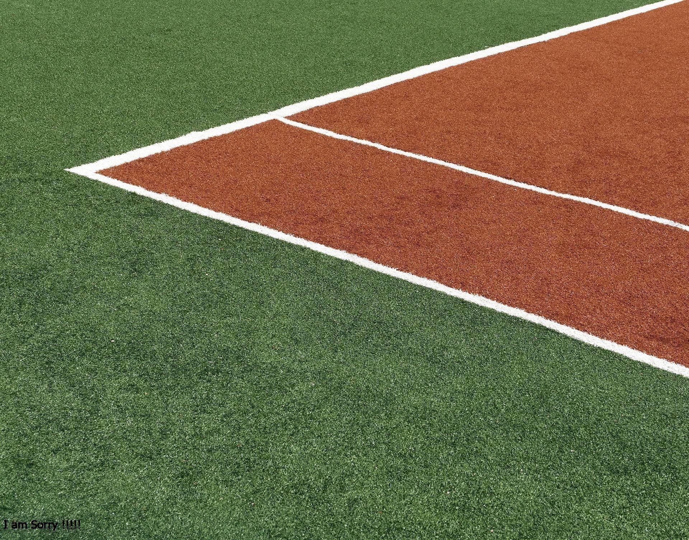

<!-- Container with fluid width -->
<div class="pic" style="position: relative; ">
  <!-- Image element with a responsive style -->
  

  <!-- Semi-transparent black layer -->
  <div style="position: absolute; top: 5; left: 0; width: 100%; height: 100%; background-color: rgba(0, 0, 0, 0.5);">
  </div>
  